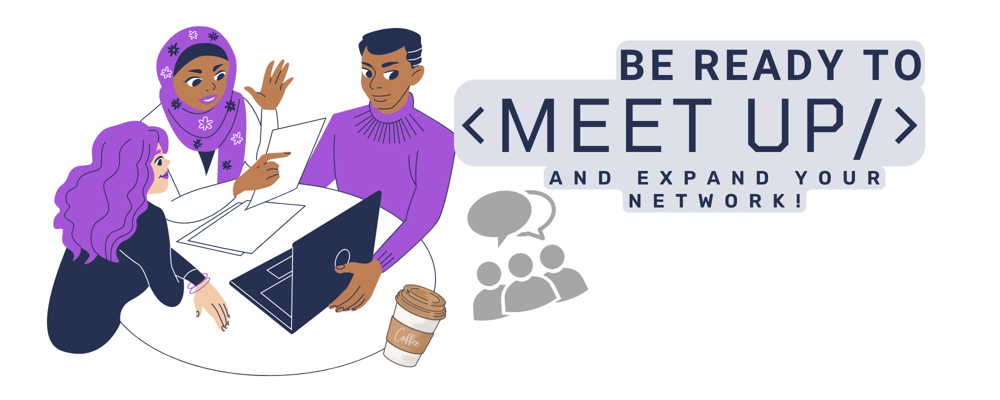

The latest news on engineering technology, for everyone.

There are many events in your area where you'll get to know engineers just like you. You can find them at meetups, socials, live events, and parties. You can also find them at dinners or coffee chats.
Engineers are often introverts by nature and they need to be socialized in order to work better with other people. These events serve as a way for them to get out of their comfort zone and start meeting new people.
Now we'll show you a couple of alternatives and options that can fill your thirst for socialization.
This article will discuss the top 5 wackiest software engineer parties in 2022.
The article will go over a few of the most popular types of parties that software engineers enjoy. It will also give an overview of the top 5 wackiest parties that are taking place in 2022.
#1: The Robot Party: In 2022, it is not uncommon for a party to have at least one robot attending. They have been used for years as party favors and entertainment so it is only natural that they would become more commonplace.
#2: The VR Party: The VR party has been steadily gaining popularity over the last few years and by 2022, they are expected to be commonplace as well. With virtual reality becoming more affordable and immersive, these parties are expected to take off even more than before.
Def Con 30: A look inside hacking and the hacker community
Take a peek inside the world’s largest hacking conference. Hill is live at Def Con 30, talking with hackers of all stripes, from a bank-robbing prevention specialist, an 18-year old aspiring security tester, and an organization helping survivors of domestic abuse protect themselves. What makes someone a hacker? How is “good hacking” benefiting society? And how can we protect ourselves? Find out alongside Hill as he explores an entire ecosystem that most of the time stays in the shadows.